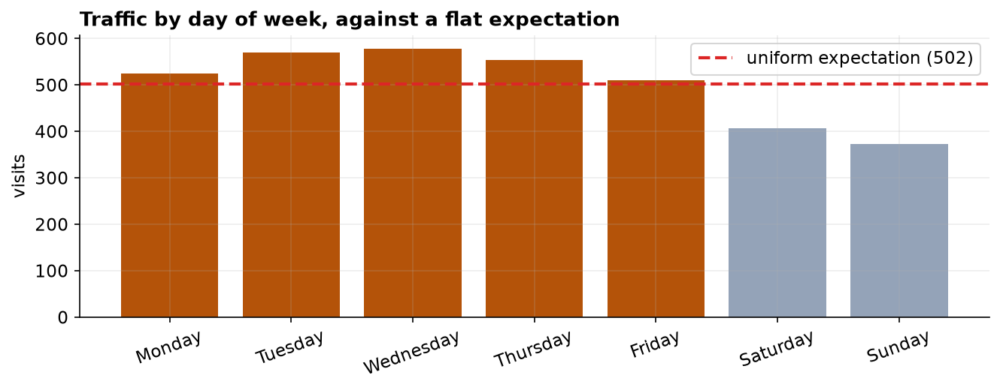
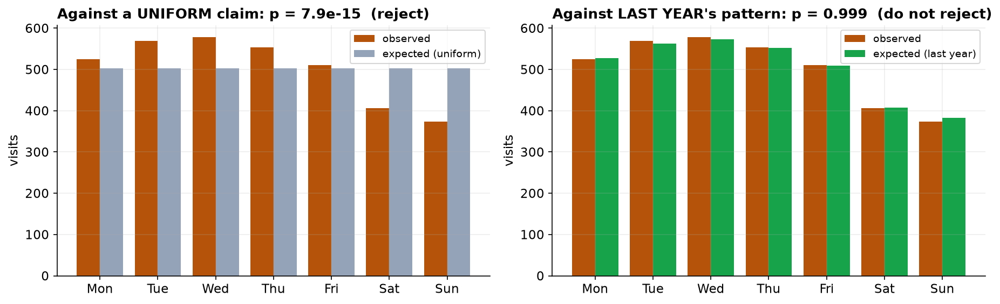

Traffic Is Uneven Across the Week, Exactly as It Always Has Been
Weekends run about a fifth below weekdays, and this quarter matches last year almost perfectly.
Recommendation
There is no anomaly here and nothing to investigate. Traffic is not spread evenly across the week, but it never has been: weekends are quieter, as they are for most business sites. Compared against last year's day-of-week pattern, this quarter is statistically indistinguishable from expectation. Plan campaigns around the midweek peak, and treat the weekend dip as a fixed feature rather than a problem to solve.
What we found
Across 3,514 visits, midweek is the busiest stretch (Wednesday highest at 578) and Sunday the quietest at 373. Weekdays run roughly a fifth above weekend days. That pattern is consistent and systematic rather than random fluctuation.

The question that was actually asked
We were asked whether traffic is spread evenly across the week. Statistically the answer is a clear no. But that question is worth pausing on, because nobody running a website expects an even week. Testing against an expectation no one holds gives a technically correct answer that tells you nothing you can act on.
The more useful question
So we asked a second question: does this quarter look like last year? Measured against last year's day-of-week shares, the answer is that it matches almost exactly (p = 0.999, where anything above 0.05 means no detectable difference). The same seven numbers that looked dramatic against a flat line look completely ordinary against precedent.

What to take from this
Two statements are both true: traffic is uneven across the week, and traffic is entirely normal. Which one you report depends on what you compare against. For planning purposes the second is the one that matters, and the practical implication is simply to schedule around the midweek peak.